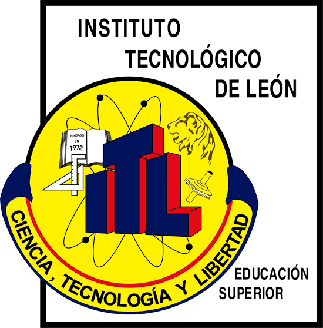

Instituto Tecnológico Nacional de México Campus León
Ingeniería en Tecnologías de la Información y Comunicaciones
El egresado de esta ingeniería será capaz de:
- Estará actualizado en conocimientos científicos y tecnológicos de ciencias de la computación.
- Será capaz de identificar y resolver problemas aplicando conocimientos científicos básicos y de las ciencias de la computación.
- Tendrá la habilidad de diseñar y conducir experimentos computacionales, así como analizar e interpretar datos.
- Habrá llevado a cabo con éxito una investigación dirigida por su asesor sobre un tema de relevancia científica y/o tecnológica en la línea de investigación seleccionada.
- Tendrá capacidad para diseñar y desarrollar sistemas computacionales utilizando técnicas avanzadas de computación.
- Podrá plantear y desarrollar proyectos de investigación que contribuyan al desarrollo del conocimiento del área.
- Habilidad para leer, escribir y exponer artículos en idioma inglés.